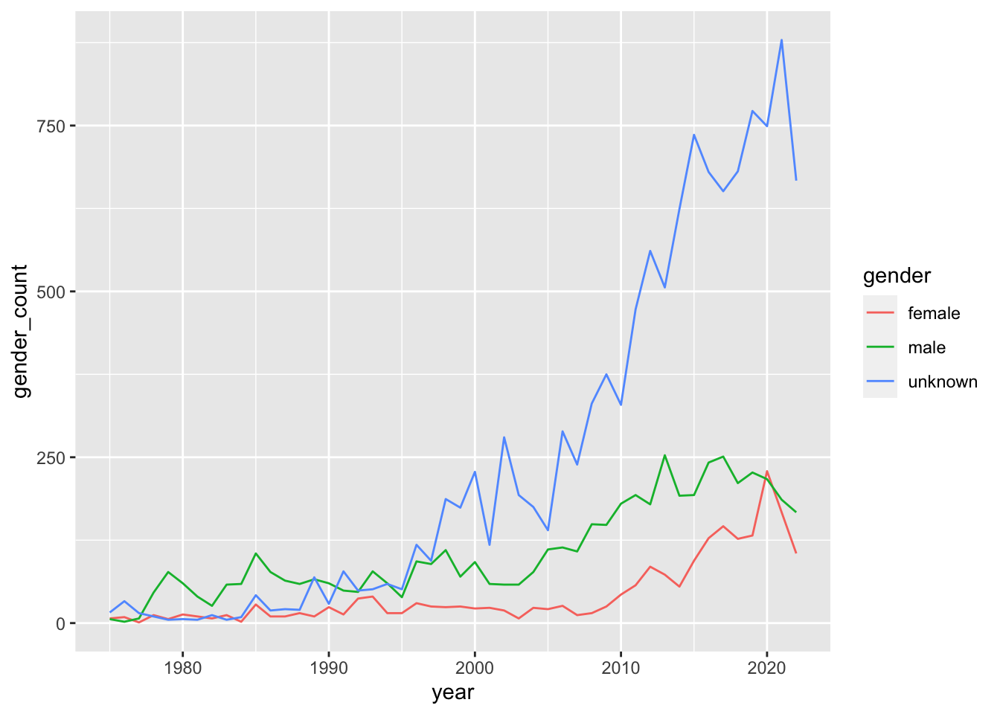

library(tidyverse)
inventories <- readr::read_csv('https://raw.githubusercontent.com/rfordatascience/tidytuesday/master/data/2022/2022-09-06/inventories.csv.gz')
sets <- readr::read_csv('https://raw.githubusercontent.com/rfordatascience/tidytuesday/master/data/2022/2022-09-06/sets.csv.gz')
minifigs <- readr::read_csv('https://raw.githubusercontent.com/rfordatascience/tidytuesday/master/data/2022/2022-09-06/minifigs.csv.gz')
inventory_minifigs <- readr::read_csv('https://raw.githubusercontent.com/rfordatascience/tidytuesday/master/data/2022/2022-09-06/inventory_minifigs.csv.gz')Legos
Creating a Dataset
I need to combine the datasets to get the minifigures which exist in a particular set in a particular year.
lego_data <- minifigs %>%
left_join(inventory_minifigs, by = "fig_num") %>%
left_join(inventories, by = c("inventory_id" = "id")) %>%
left_join(sets, by = "set_num") %>%
mutate(mininame = tolower(name.x)) %>%
mutate(gender = case_when(
str_detect(mininame, "woman|girl|female|queen|ponytail|emma|olivia|andrea|mia|stephanie|ms.|mrs.|mother|goddess|daughter") ~ "female",
str_detect(mininame, "man|boy|sir|male|guy|king|beard|stubble|knight|lord|luke|harry|hagrid|darth|mr.|father|god|son|soldier|moustache|santa|lloyd") ~ "male",
TRUE ~ "unknown"
))lego_data %>%
select(gender) %>% table()gender
female male unknown
2039 5138 12080 Data Viz
Admittedly, the gender variable that I created is terrible. The vast majority of pieces aren’t easy to gender. I still think that the majority of them present as male, but I don’t have a good way to extract how they present using the name of the minifigure.
The y-axis on the plot below is counting the number of minifigures (of each gender type) per set. It is a misleading metric because there might be some sets that sold a zillion copies and others that hardly anyone bought.
While the variable creation is terrible, the trend seen in the plot is not surprising. That is, more of the minifigures present as male than female and there are way more minifigures now than there were in the 80s and 90s.
lego_data %>%
group_by(year, gender) %>%
summarize(gender_count = n()) %>%
ggplot() +
geom_line(aes(x = year, y = gender_count, color = gender))